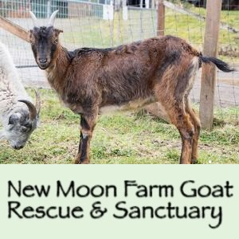
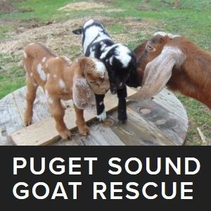
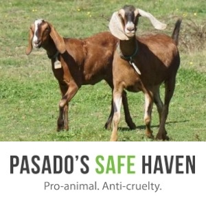

Guardians of the Goats
Home
Guardians
Goats
Forms
Resources
Resources



How to care for Goats
Goat Care Basics
Goats 101
Caring for Goats in 3 Steps
Raising Goats
Caring for a Sick Goat
How to care for Baby Goats
Baby Goat Basics
Baby Goats 101
Caring for Kids
Raising Kids